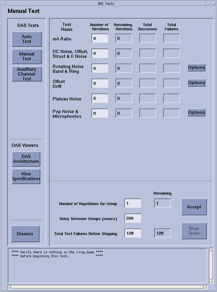
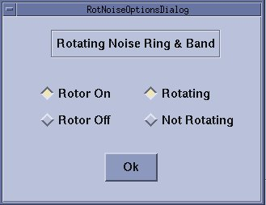

Proprietary to General Electric
Direction 5307452-8EN, Rev# 4
Discovery CT750 HD Service Methods - Adv
Proprietary to General Electric |
| Last Revised: | April 21, 2008 |
The difference between auto test and manual test is that the auto test feature runs a default number of iterations for a predefined subset of the tests, while the manual mode allows the user to specifically select any combination of available test(s) and the number of iterations for that selection of test(s). Manual test mode also has extra tests for diagnostic use that are not available in Auto test.
Illustration 1: Example Auto Test Screen

Illustration 2: Example Manual Test Screen

Illustration 3: Options box example

When running DASTools auto or manual tests a log file is generated. The files are stored in the /usr/g/service/state directory. DASTools already indicates pass/fail for each item.
All history logs can be viewed using the Common Service desktop, Error log tab, Software History Logs utility.
The overview of test results is stored in the ssw.dastools.hist file. Results are appended to the file for every pass of DASTools run and are in ascii text format..
For auto tests, the history file is named ssw.dastools_auto0x.hist. There are a number of files generated, one for each pass such that the “x” cycles from 1 to up to 5 rotating files. Look at the file date/time to verify which numbered file was just generated for the desired pass of a DASTools test run. These files are in csv format. The data can be pulled into an excel worksheet for easier viewing/analysis.
For manual tests (all except maratios), the history file is named ssw.dastools_manual0x.hist. There are a number of files generated, one for each pass such that the “x” cycles from 1 to up to 5 rotating files. Look at the file date/time to verify which numbered file was just generated for the desired pass of a DASTools test run. These files are in csv format. The data can be pulled into an excel worksheet for easier viewing/analysis.
The maratio test creates its own hist file, ssw.datools_maratio0x.hist. This file is an ascii text file and follows the cycled file numbering as defined for the auto and manual test files.
The mA Ratio test runs 3 scans to collect data. The purpose of the test is to detect nonlinear, unresponsive and dead/shorted detector channels. To do this each detector element and each DAS channel is tested. The data is analyzed and compared against specifications to determine if a detector cell falls outside the range of expected operation. Once a cell is determined to be bad, it is mapped out of the detector and its data is not used for subsequent scans. The results are logged in the DAStools log and sent to the gesyslog. gesyslog errors can be seen indicating when bad pixels have been found, the actual failure mode of that pixel and which module has the bad pixel.
Bad pixels can be marked as Passed or Failed for numerous checks. An indication of Pass indicates that the pixel can be ignored by the system with no effects on image quality. An indication of Fail indicates that the pixel may cause an image artifact and a scheduled module replacement is needed.
A pixel that is marked as Failed will not allow Detailed Calibrations to be performed but Fastcal will be allowed.
This test collects DAS data with zero input current (no x-ray) and the mean value of each output channel is compared to spec. Also, the standard deviation is measured against a noise spec. There is only a single DAS gain for the 64 slice system so only a single scan is necessary. Refer to Table 1
The Structured Noise test looks for structured noise patterns rather than just a noise level change. This test performs another analysis on the same data collected for DC noise and offsets.
The Electronic Noise Test (eNoise) calculates the baseline signal noise of the system by determining the median standard deviation value of each row of a static xray off scanfile. The median value is compared against a spec and if fails, the entire row of data is considered failed.
Depending on failed pattern, based on DAS/Detector architecture, the fault may be a board, connector, or power supply.
Table 1: Offset and Noise Scans
| System Type | Scan # | Gantry Rotation | X-Ray | Rotor | Acquisition Mode | Scan Time/VPS | Scan Data Analysis |
|---|---|---|---|---|---|---|---|
| 64 slice | 1 | Stationary 0° | No X-Ray | Off | 64 x 0.625 | 0.4 / 2460 | Raw |
The Rotating Noise Test uses a new protocol that includes 90 sec of gantry spin before each scan. Ring test is strictly the comparison of standard deviations of view data per channel against a spec.
The Band test compares the rolling mean of the standard deviation data of 4 channels against the spec.
A series of two data collection scans, over a course of 60 seconds, and the offset means values are analyzed to measure the amount of variance over 60 seconds of scanning. There are two scans taken with a delay of 60 seconds between each scan. The absolute value of the Means are taken and compared. Scan time is 0.4 seconds @ 2460 views/sec
There should be little or no drift between the first scan of each scan mode and the scan taken 60 seconds later.
Table 2: Offset Drift Test
| System Type | SCAN # | SCAN MODE | DESCRIPTION |
|---|---|---|---|
| 64 | 1 | 64 x 0.625 | Initial Offsets scan at specific technique |
| 64 | 2 | 64 x 0.625 | Offset scan after 60 second interscan |
Failure analysis of the drift test may be a bad fan or clogged filter in the Fan Plenum. This could also be a bad A/D board in the Detector, but also considerations need to be taken on account of room temperature fluctuations and DAS warm-up time. It may be normal for this test to fail if it is executed immediately after turning on the DAS.
Plateau noise test is intended as a manufacturing test run during detector manufacturing to make sure there are no manufacturing defects introduced during initial DAS/Detector build and integration. This test is not run during an Auto pass of DAStools and is not intended for field use without specific instructions from Engineering. There is currently no defined field actions for this test.
Pop noise is the maximum of view to view noise differences. Microphonics is the noise or standard deviation during rotation.
This test is for diagnostic use only.
This test takes a series of two scans. In the auto-mode, it takes ten iterations of the series. Failure analysis of this test is dependent on test results. Pop/Noise and microphonics issues can be caused by many system related conditions. Some of the most common could be the power supply noise, electrical connections, gantry rotation/mechanical issues, and external influences.
It is highly important to look at patterns relative to DAS/Detector architecture, gantry rotation (azimuth position as well as velocity), and possible vibration (rotor on/off).
Table 3: Microphonic Noise Scans
| System Type | Scan # | Gantry Rotation | X-Ray | Rotor | Acquisition Mode | Scan Time/VPS | Scan Data Analysis |
|---|---|---|---|---|---|---|---|
| 64 slice | 1 | Rotating | No X-Ray | On | 64 x 0.625 | 1 / 984 | Offset |
| 64 slice | 2 | Rotating | No X-Ray | On | 64 X 0.625 | 0.4 / 2460 | Offset |